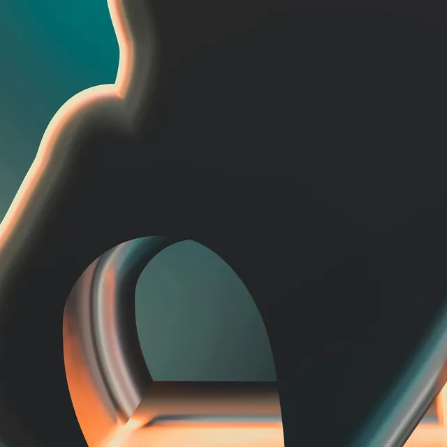
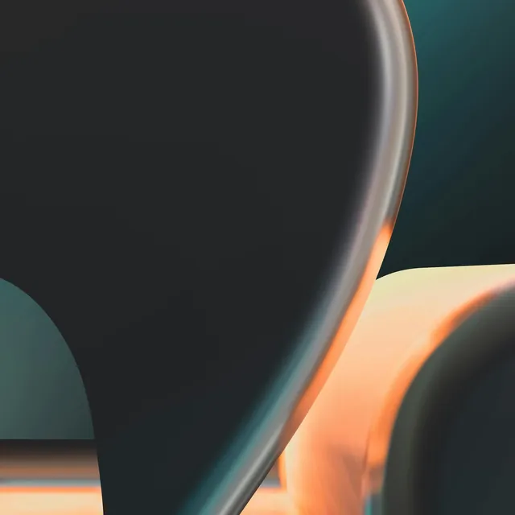
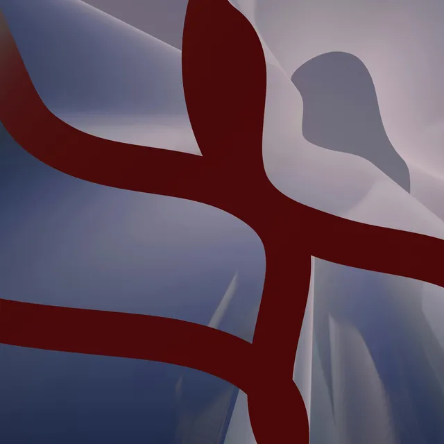
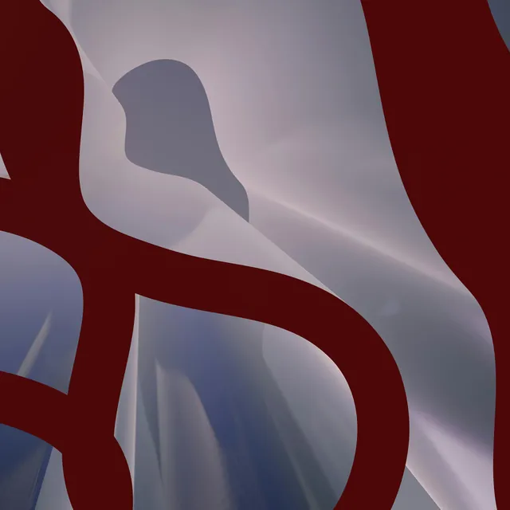

<!-- ================================
  Arco — Cursor Trail
  arco.studio

  Add to <head>
  <link rel="stylesheet" href="https://fonts.googleapis.com/css2?family=Inter+Tight:wght@400;450;500;600&display=swap">
  <link rel="stylesheet" href="cursor-trail.css">

  Add before </body>
  <script src="https://cdn.jsdelivr.net/npm/gsap@3.15/dist/gsap.min.js"></script>
  <script src="cursor-trail.js"></script>
================================ -->

<section class="section_arco-cursor-trail" data-arco-cursor-trail aria-label="Arco Studies">
  <header class="arco-cursor-trail_bar">
    <div class="arco-cursor-trail_logo">
      <svg xmlns="http://www.w3.org/2000/svg" viewBox="0 0 96 25" fill="none" role="img" aria-label="Arco Studio">
        <path d="M21.266 22.158C19.245 20.618 16.548 21.481 14.195 22.636C10.656 24.383 5.494 26.076 2.379 23.632C0.822 22.404.205 20.545 0 18.559-.066 15.611.862 12.875 2.081 10.173L7.349 0H18.589L30.67 24.934 23.307 24.993C22.79 23.858 22.154 22.988 21.266 22.151V22.158ZM11.134 18.274 14.633 16.66C15.918 16.062 17.184 15.677 18.576 15.246L13.075 4.004 8.927 12.158C7.986 14.011 6.647 17.317 7.601 18.473 8.191 19.19 9.861 18.865 11.134 18.274Z" fill="currentColor"/>
        <path d="M35.455 20.033C35.455 16.959 37.377 15.199 40.77 14.575L45.495 13.725C47.483 13.367 47.907 12.583 47.907 11.341 47.907 9.25 46.701 7.975 43.374 7.975 39.822 7.975 38.159 9.542 38.159 11.866L36.138 11.7C36.138 8.367 38.841 6.149 43.441 6.149 48.04 6.149 49.962 8.174 49.962 11.182V21.766C49.962 22.583 50.187 23.141 51.068 23.141 51.36 23.141 51.526 23.108 51.751 23.041H51.884V24.675C51.625 24.774 51.068 24.874 50.545 24.874 48.782 24.874 47.967 23.831 47.967 22.224V21.574C46.728 23.891 44.216 25.007 41.38 25.007 37.728 25.007 35.442 23.015 35.442 20.04L35.455 20.033ZM47.94 19.051V14.641C47.45 15 46.476 15.325 44.746 15.624L41.651 16.149C38.749 16.64 37.609 18.008 37.609 19.807 37.609 21.833 38.981 23.207 41.85 23.207 45.011 23.207 47.457 21.541 47.947 19.057L47.94 19.051Z" fill="currentColor"/>
        <path d="M54.17 6.474H55.966L56.165 9.283C57.112 7.357 58.511 6.308 60.532 6.308 61.122 6.308 61.672 6.375 61.996 6.507V8.466H61.831C61.539 8.367 61.049 8.3 60.591 8.3 57.98 8.3 56.224 10.193 56.224 13.101V24.668H54.17V6.474Z" fill="currentColor"/>
        <path d="M61.831 15.558C61.831 9.874 65.124 6.149 70.214 6.149 74.257 6.149 77.06 8.499 77.55 12.324L75.43 12.523C75.105 9.748 73.117 8.114 70.115 8.114 66.297 8.114 63.951 10.923 63.951 15.564 63.951 20.206 66.297 23.015 70.115 23.015 73.017 23.015 74.939 21.514 75.396 18.931L77.484 19.13C76.894 22.756 74.157 24.98 70.181 24.98 65.124 24.98 61.831 21.255 61.831 15.571V15.558Z" fill="currentColor"/>
        <path d="M79.34 15.657C79.34 9.874 82.633 6.149 87.69 6.149 92.746 6.149 96.007 9.841 96.007 15.624 96.007 21.408 92.746 25 87.69 25 82.633 25 79.34 21.308 79.34 15.657ZM93.886 15.558C93.886 10.823 91.606 8.108 87.69 8.108 83.773 8.108 81.46 10.916 81.46 15.591 81.46 20.266 83.74 23.041 87.657 23.041 91.573 23.041 93.886 20.299 93.886 15.558Z" fill="currentColor"/>
      </svg>
    </div>
    <span class="arco-cursor-trail_bar-muted">Arco Studies</span>
  </header>

  <div class="arco-cursor-trail_content">
    <p class="arco-cursor-trail_eyebrow">Five studies in form and light</p>
    <h1 class="arco-cursor-trail_heading">Move slowly.<br>Then fast.</h1>
  </div>

  <footer class="arco-cursor-trail_bar">
    <span class="arco-cursor-trail_bar-muted">Move or drag across the page</span>
    <button class="arco-cursor-trail_sound" type="button" aria-pressed="false">Sound off</button>
  </footer>

  <div class="arco-cursor-trail_layer" aria-hidden="true"></div>
  <div class="arco-cursor-trail_dot" aria-hidden="true"></div>

  <div class="arco-cursor-trail_sources" aria-hidden="true">
    
    
    
    
    
    
    
    
    
    
  </div>
</section>
